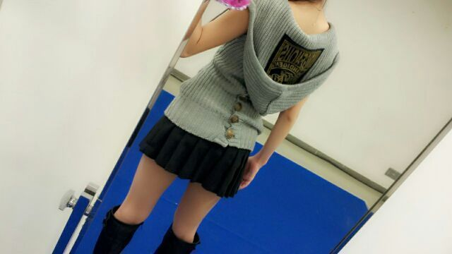
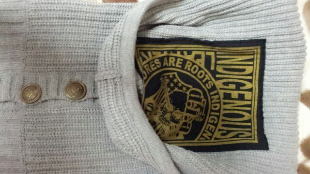

| 2013/03 17 Sun | ミュージックフェア♪ 千 葉幕張* 握手会 *まひろ〜 |
ほほぉ〜い (((/・ω・)/
Rotty☆やよぉー。
今日は 幕張で
個別握手会だったよ(^о^)
今日もパワーもらったよ！
本当、皆ありがとねん♪)))
私服は こんな感じです★

前から見ると ちょいと
色が地味に見えるかも
しんないだけど
後ろのフード♪のところ
がっつりこんなデザインに
なってるんだよ(*^^*)

誰もまひろの後ろ姿見てないから
わからなかったでしょぉ〜う(>ω<)?

どうかなあ=・▽・=?
ぴょん ←(話かわる)
ミュージックフェア♪
見ましたかん?
録画してたからね
握手会終わって
お家帰ってきてから
もちろんすぐ見たよ ! !
わーいわーい(*´∇｀*)
talk収録もお話し聞くだけだったけど
なんだかすごく
楽しかったな〜(*´ω`*)
AIさん... 『voice』って曲
めっちゃめっちゃ
かっこいいぃwwww 大好き ! !
ミュージックフェア
どうだっかなあ?
来週も絶対見てねん♪
コラボ曲〜〜
今日 メンバーと撮った写メ
明日から 載せてくねーん=・ω・=
ではでは
今日も本当ありがと !
ホワイトデーのチョコだの
くれたメンバースタッフさん
ありがと !
ではでは 皆様
おやすみなさいん...(*´▽`*)グーzzz
コメント(229)
2013/03/17 00:12